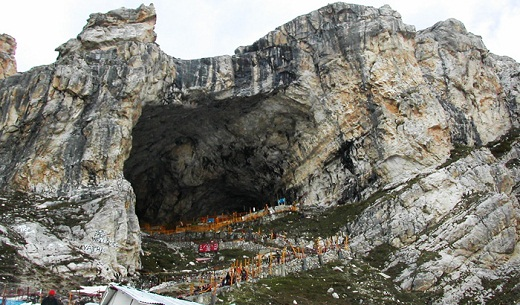

Amarnath Temple, Kashmir
The Amarnath Temple in Kashmir is regarded as one of the most sacred temples of Lord Shiva. This cave temple lies at an altitude of 3888 m in the upper reached of the Himalayas and features a natural lingam which forms once a year. The holy Amarnath Yatra is regarded as one of the most important pilgrimages in India.